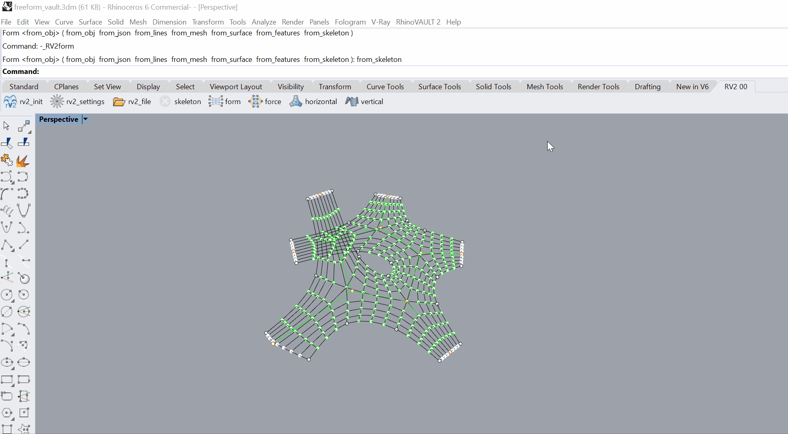

Form Diagram: Part 2

Identify the supports and boundaries
The second part is to identify the supports of a form diagram and update the boundary conditions.
Identify the supports
After initialising the form diagram, we identify the supports.
select
Modify form diagram–>Update verticesfrom the drop down menuselect support vertices, set
is_fixedandis_anchorattribute toTrue
For a form diagram created from skeleton, default supports have already been applied, so no operation is needed here.
Update the boudary conditions

Having identified the supports, we update the boundary conditions. “feet” will be added to the support vertices.
from the drop down menu, select
FormDiagram–>Update Boundaries
form.update_boundaries(feet=2)
form = move_diagram(form)
rhinoform = RhinoFormDiagram(form)
rhinoform.draw(settings)